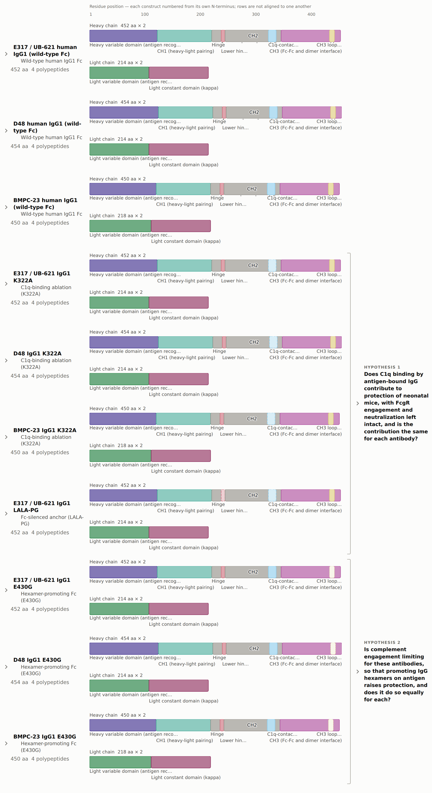

GPT 6.1 sol (high)
Four antibodies, each with its own wild-type Fc: HSV8 and CH42 against gD, D48 and BMPC-23 against gB. K322A is made for all four, and E430G for HSV8 and D48.
Construct Maps / Antibodies against HSV-1 and complement
Antibodies against the HSV glycoproteins D (gD) and B (gB) protect neonatal mice, and for a panel of gD antibodies, effector functions were needed in addition to neutralization 1. Those effector functions include engagement of Fc receptors and of C1q, the first component of the classical complement pathway. HSV resists both: its gC protein binds the complement component C3b, and its gE protein binds the Fc region of IgG 2. How much complement contributes to protection by these antibodies, and whether it contributes equally for every antibody, is the question.
The prompt we gave GPT and Claude
Design a library of anti-HSV-1 antibody constructs against gD and gB to test whether complement engagement contributes to protection in neonatal mice and whether it does so uniformly across antibodies. Only use literature published before 2026-01-01.
GPT 6.1 sol (high)
Four antibodies, each with its own wild-type Fc: HSV8 and CH42 against gD, D48 and BMPC-23 against gB. K322A is made for all four, and E430G for HSV8 and D48.
Claude Sonnet 5.5 (high)
Three antibodies, each as wild type, K322A and E430G: E317 against gD, D48 and BMPC-23 against gB. An Fc-silenced E317 (LALA-PG) is added as a floor.
Both libraries use the same two Fc changes. K322A removes a C1q contact, and E430G makes antigen-bound IgG assemble into hexamers that C1q binds more strongly. The Fab stays the same in every pair, so any difference in protection comes from the Fc. The libraries differ in how they cover the antibodies and in what they add to separate complement from Fc receptors.

K322A removed C1q binding and complement-dependent killing in an HIV antibody, with a two-fold drop in Fc receptor binding 3. E430G promotes IgG hexamers on antigen and raises complement activation 4. GPT builds this pair of changes for HSV8 and D48, and builds K322A alone for CH42 and BMPC-23.
GPT's key control is to repeat each comparison in mice that lack C1q. An effect of K322A or E430G that disappears without C1q is a complement effect, and one that persists is not. The record adds that K322A is not guaranteed to leave Fc receptor binding untouched, so Fc receptor activity has to be measured for each variant.
HSV8_KA from the design recordHSV8_KA in GPT 6.1 sol (high). Perturbs the C1q-contact region while leaving the paired antigen-binding domains unchanged.
Claude puts uniformity first. Every antibody has its own wild-type, K322A and E430G forms, so the effect of complement is read per antibody and then compared across them. e317-lalapg removes both C1q and Fc receptor binding. It marks the lowest protection that Fc functions can explain, which separates complement from Fc receptors and tests how much of K322A's effect is complement alone.
The record points out that LALA-PG is not always fully silent. BMPC-23 LALA-PG kept some Fc receptor binding in a gB study, so only E317, whose published data are better, carries it here. The record also lists C1qa-null and C3-null pups as controls outside the library.
e317-lalapg from the design recorde317-lalapg in Claude Sonnet 5.5 (high). Removes FcgR and C1q binding together, giving the floor of Fc-dependent protection against which the single-function variants are read.The paper, posted in October 2026, built each antibody as wild type, K322A and E430G and tested them in 2-day-old mice challenged with HSV-1 5. The Fc changes did not alter antigen binding. K322A abolished C1q binding and complement deposition for every antibody, while E430G raised them for some antibodies and not others, depending on antigen density in the assay 5.
Protection differed by antibody. K322A removed all of E317's protection, and E430G added nothing for it. For HSV8, E430G improved survival, and K322A's drop of about 20% fewer survivors was not statistically significant. CH42, a non-neutralizing gD antibody, was unaffected by either change. For all four gB antibodies, K322A made no difference, while E430G significantly improved survival, including for BMPC-23, which is non-neutralizing and did not protect on its own at the tested amount 5.
To test whether these effects ran through complement, the authors repeated the HSV8, Hu2c and HDIT102 comparisons in mice lacking C1q. All three Fc variants still protected, but the effects of K322A and E430G disappeared 5. In mice lacking Fc receptors, HSV8 E430G still improved survival over wild type. In adult mice, K322A reduced HSV8's protection, and wild-type HSV8 gave no benefit in C1q-deficient adults 5.
Both libraries put the question the right way round. GPT's record calls for the C1q-deficient comparison that the paper used to show the effects ran through complement. Claude's record lists C1qa-null pups as a control outside the library, and adds an Fc-silenced antibody to bound the Fc-dependent effect. The paper tested Fc receptors with Fc receptor-deficient mice instead 5.
The libraries cover the paper's antibodies only in part. The paper used seven: E317, HSV8 and CH42 against gD, and Hu2c, HDIT102, D48 and BMPC-23 against gB. GPT included HSV8, CH42, D48 and BMPC-23, and Claude included E317, D48 and BMPC-23. Neither included Hu2c or HDIT102, the two gB antibodies the paper took forward with HSV8 into the C1q-deficient and second-strain experiments 5. GPT left E430G out for CH42 and BMPC-23, so it would have missed the gain the paper saw for BMPC-23. Claude's three antibodies, each with all three Fc forms, cover every pattern the paper found: complement needed for protection (E317), and complement not needed but helpful when enhanced (D48, BMPC-23).
| Tested in the paper | GPT 6.1 sol (high) | Claude Sonnet 5.5 (high) |
|---|---|---|
| E317 (gD): wild-type, K322A and E430G formsMethods: Monoclonal antibodies; Figures 1 and 3 | Not proposed | Same edite317-wt e317-ka e317-eg |
| HSV8 (gD): wild-type, K322A and E430G formsMethods: Monoclonal antibodies; Figures 1 and 3 | Same editHSV8_WT HSV8_KA HSV8_EG | Not proposed |
| CH42 (gD): wild-type, K322A and E430G formsMethods: Monoclonal antibodies; Figures 1 and 3 | RelatedCH42_WT CH42_KAno E430G form | Not proposed |
| Hu2c (gB): wild-type, K322A and E430G formsMethods: Monoclonal antibodies; Figure 2 | Not proposed | Not proposed |
| HDIT102 (gB): wild-type, K322A and E430G formsMethods: Monoclonal antibodies; Figure 2 | Not proposed | Not proposed |
| D48 (gB): wild-type, K322A and E430G formsMethods: Monoclonal antibodies; Figure 2 | Same editD48_WT D48_KA D48_EG | Same editd48-wt d48-ka d48-eg |
| BMPC-23 (gB): wild-type, K322A and E430G formsMethods: Monoclonal antibodies; Figure 2 | RelatedBMPC23_WT BMPC23_KAno E430G form | Same editbmpc23-wt bmpc23-ka bmpc23-eg |
| VRC01 wild-type IgG1, an irrelevant-antigen isotype controlResults: The role of complement activation in mAb-mediated protection from HSV-1 challenge; Figure 4A–C | Not proposed | Not proposedproposed an Fc-silenced anchor (e317-lalapg) instead |
✓ same edit · ~ related: a different change at the same position, or the same idea · – not proposed. Construct names are the ones each library uses.